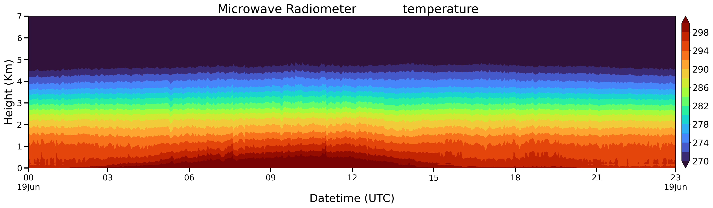
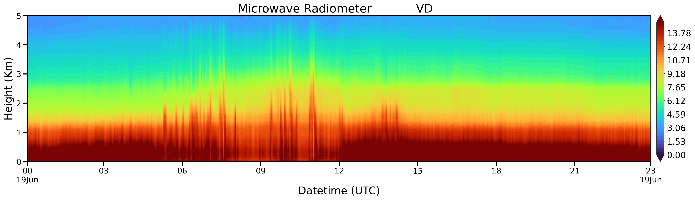
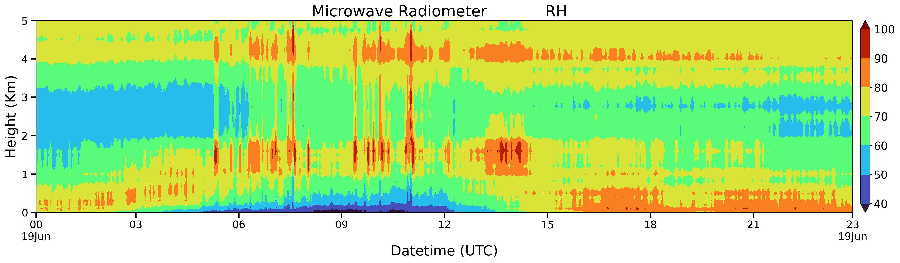

PyMWR Example#
import pymwr
import warnings
warnings.filterwarnings("ignore")
# Mention the data path
df = pymwr.read("../examples")
df
| 0 | 1 | 2 | 3 | 4 | 5 | 6 | 7 | 8 | 9 | ... | 58 | 59 | 60 | 61 | 62 | 63 | 64 | 65 | 66 | 67 | |
|---|---|---|---|---|---|---|---|---|---|---|---|---|---|---|---|---|---|---|---|---|---|
| 0 | Record | Date/Time | 10 | Tamb(K) | Rh(%) | Pres(mb) | Tir(K) | Rain | Vint(cm) | Lqint(mm) | ... | DataQuality | |||||||||
| 1 | Record | Date/Time | 30 | GPS Date/Time | Latitude | Longitude | Magnetic Variation | Status | Quality | Number Satellites | ... | ||||||||||
| 2 | Record | Date/Time | 80 | ID | SNR | Az(deg) | El(deg) | Tamb(K) | Rh(%) | Pres(mb) | ... | 8 | 8.25 | 8.5 | 8.75 | 9 | 9.25 | 9.5 | 9.75 | 10 | DataQuality |
| 3 | Record | Date/Time | 100 | Record Type | Title | ... | |||||||||||||||
| 4 | Record | Date/Time | 200 | Tamb(K) | Rh(%) | Pres(mb) | Tir(K) | Rain | DataQuality | ... | |||||||||||
| ... | ... | ... | ... | ... | ... | ... | ... | ... | ... | ... | ... | ... | ... | ... | ... | ... | ... | ... | ... | ... | ... |
| 16723 | 16717 | 6/19/2019 23:55 | 404 | Angle Scan26n(N) | 69.683 | 59.016 | 59.808 | 62.406 | 60.372 | 61.563 | ... | 20.594 | 16.561 | 16.223 | 14.269 | 1 | |||||
| 16724 | 16718 | 6/19/2019 23:55 | 404 | Angle Scan26n(S) | 81.61 | 83.461 | 83.627 | 81.148 | 83.191 | 81.561 | ... | 43.86 | 43.357 | 37.556 | 27.288 | 1 | |||||
| 16725 | 16719 | 6/19/2019 23:55 | 404 | Angle Scan26n(A) | 75.328 | 70.53 | 70.975 | 71.751 | 71.041 | 71.192 | ... | 29.729 | 26.558 | 24.488 | 19.645 | 1 | |||||
| 16726 | 16720 | 6/19/2019 23:55 | 301 | 3.787 | 0.089 | 7.25 | 1 | ... | |||||||||||||
| 16727 | 16721 | 6/19/2019 23:55 | 301 | 5.29 | 0.237 | 7.25 | 1 | ... |
16728 rows × 68 columns
pymwr.get_site_coords(df)
{'Latitude': 1300.7539, 'Longitude': 7751.038}
pymwr.get_dates(df)
{'Each file starting date': ['6/19/2019 0:04']}
pymwr.get_height_levels(df)
{'MWR height levels (km)': [0.0,
0.05,
0.1,
0.15,
0.2,
0.25,
0.3,
0.35,
0.4,
0.45,
0.5,
0.6,
0.7,
0.8,
0.9,
1.0,
1.1,
1.2,
1.3,
1.4,
1.5,
1.6,
1.7,
1.8,
1.9,
2.0,
2.25,
2.5,
2.75,
3.0,
3.25,
3.5,
3.75,
4.0,
4.25,
4.5,
4.75,
5.0,
5.25,
5.5,
5.75,
6.0,
6.25,
6.5,
6.75,
7.0,
7.25,
7.5,
7.75,
8.0,
8.25,
8.5,
8.75,
9.0,
9.25,
9.5,
9.75,
10.0]}
z26 = pymwr.get_scan_data(df, 401, "Zenith26")
fig = pymwr.plot(z26, "temperature", 7)

vd = pymwr.plot(pymwr.get_scan_data(df, 402, "Zenith26"), "VD", 5)

rh = pymwr.plot(pymwr.get_scan_data(df, 404, "Zenith26"), "RH", 5)
